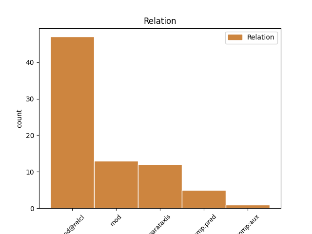
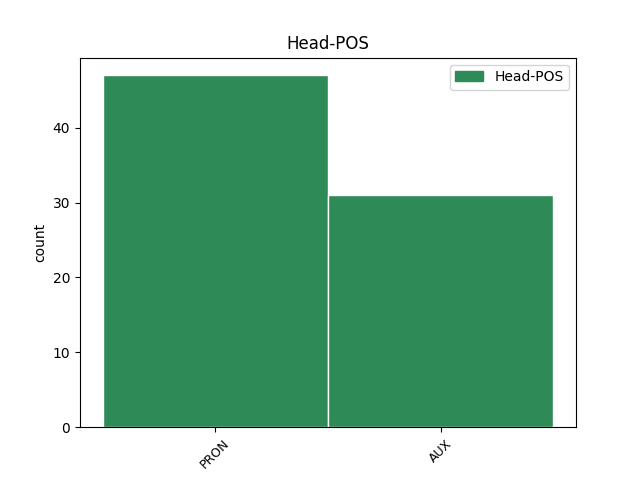
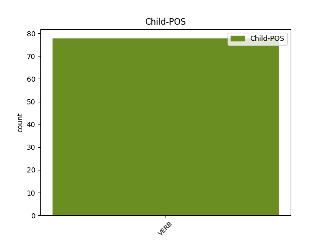

Distribution of features within this leaf



Agreement Rules sorted by frequency.
- When the dependent token is the modifer(mod@relcl) of the head token, and the head token is PRON and the dependent token is VERB.
1 πρόκειται _ _ _ _ 0 _ _ _
2 για _ _ _ _ 0 _ _ _
3 αυτό αυτός PRON PRON Case=Acc|Gender=Neut|Number=Sing|Person=3|PronType=Dem 0 _ _ _
4 το _ _ _ _ 0 _ _ _
5 οποίο _ _ _ _ 0 _ _ _
6 αποκαλύφθηκε αποκαλύπτω VERB VERB Aspect=Perf|Mood=Ind|Number=Sing|Person=3|Tense=Past|VerbForm=Fin|Voice=Pass 3 mod@relcl _ _
7 κατά _ _ _ _ 0 _ _ _
8 τη _ _ _ _ 0 _ _ _
9 διάρκεια _ _ _ _ 0 _ _ _
10 αυτής _ _ _ _ 0 _ _ _
11 της _ _ _ _ 0 _ _ _
12 διαδικασίας _ _ _ _ 0 _ _ _
13 , _ _ _ _ 0 _ _ _
14 ότι _ _ _ _ 0 _ _ _
15 ο _ _ _ _ 0 _ _ _
16 Εισαγγελέας _ _ _ _ 0 _ _ _
17 κάποια _ _ _ _ 0 _ _ _
18 στιγμή _ _ _ _ 0 _ _ _
19 ζήτησε _ _ _ _ 0 _ _ _
20 από _ _ _ _ 0 _ _ _
21 την _ _ _ _ 0 _ _ _
22 Πρόεδρο _ _ _ _ 0 _ _ _
23 του _ _ _ _ 0 _ _ _
24 Σώματος _ _ _ _ 0 _ _ _
25 , _ _ _ _ 0 _ _ _
26 την _ _ _ _ 0 _ _ _
27 προκάτοχό _ _ _ _ 0 _ _ _
28 σας _ _ _ _ 0 _ _ _
29 , _ _ _ _ 0 _ _ _
30 λεπτομέρειες _ _ _ _ 0 _ _ _
31 για _ _ _ _ 0 _ _ _
32 την _ _ _ _ 0 _ _ _
33 ψήφο _ _ _ _ 0 _ _ _
34 που _ _ _ _ 0 _ _ _
35 έχουν _ _ _ _ 0 _ _ _
36 δώσει _ _ _ _ 0 _ _ _
37 οι _ _ _ _ 0 _ _ _
38 δύο _ _ _ _ 0 _ _ _
39 συγκεκριμένοι _ _ _ _ 0 _ _ _
40 βουλευτές _ _ _ _ 0 _ _ _
41 προκειμένου _ _ _ _ 0 _ _ _
42 να _ _ _ _ 0 _ _ _
43 διευκρινιστεί _ _ _ _ 0 _ _ _
44 περαιτέρω _ _ _ _ 0 _ _ _
45 η _ _ _ _ 0 _ _ _
46 πιθανότητα _ _ _ _ 0 _ _ _
47 να _ _ _ _ 0 _ _ _
48 είχαν _ _ _ _ 0 _ _ _
49 ασκήσει _ _ _ _ 0 _ _ _
50 αθέμιτη _ _ _ _ 0 _ _ _
51 επιρροή _ _ _ _ 0 _ _ _
52 . _ _ _ _ 0 _ _ _
1 Θεωρώ _ _ _ _ 0 _ _ _
2 σημαντική _ _ _ _ 0 _ _ _
3 την _ _ _ _ 0 _ _ _
4 αναγνώριση _ _ _ _ 0 _ _ _
5 του _ _ _ _ 0 _ _ _
6 παλαιστινιακού _ _ _ _ 0 _ _ _
7 κράτους _ _ _ _ 0 _ _ _
8 και _ _ _ _ 0 _ _ _
9 είναι είμαι AUX AUX Aspect=Imp|Mood=Ind|Number=Sing|Person=3|Tense=Pres|VerbForm=Fin|Voice=Pass 0 _ _ _
10 η _ _ _ _ 0 _ _ _
11 μόνη _ _ _ _ 0 _ _ _
12 δυνατότητα _ _ _ _ 0 _ _ _
13 , _ _ _ _ 0 _ _ _
14 όπως _ _ _ _ 0 _ _ _
15 επεσήμανε επισημαίνω VERB VERB Aspect=Perf|Mood=Ind|Number=Sing|Person=3|Tense=Past|VerbForm=Fin|Voice=Act 9 mod _ _
16 ο _ _ _ _ 0 _ _ _
17 συνάδελφος _ _ _ _ 0 _ _ _
18 Poettering _ _ _ _ 0 _ _ _
19 . _ _ _ _ 0 _ _ _
1 « _ _ _ _ 0 _ _ _
2 Ο _ _ _ _ 0 _ _ _
3 Κρίστιαν _ _ _ _ 0 _ _ _
4 Βουλφ _ _ _ _ 0 _ _ _
5 ήταν είμαι AUX AUX Aspect=Imp|Mood=Ind|Number=Sing|Person=3|Tense=Past|VerbForm=Fin|Voice=Pass 0 _ _ _
6 πολύ _ _ _ _ 0 _ _ _
7 συνεργάσιμος _ _ _ _ 0 _ _ _
8 » _ _ _ _ 0 _ _ _
9 , _ _ _ _ 0 _ _ _
10 ανάφερε αναφέρω VERB VERB Aspect=Imp|Mood=Ind|Number=Sing|Person=3|Tense=Past|VerbForm=Fin|Voice=Act 5 parataxis _ _
11 εκπρόσωπος _ _ _ _ 0 _ _ _
12 της _ _ _ _ 0 _ _ _
13 Εισαγγελίας _ _ _ _ 0 _ _ _
14 . _ _ _ _ 0 _ _ _
1 το _ _ _ _ 0 _ _ _
2 ένα _ _ _ _ 0 _ _ _
3 το _ _ _ _ 0 _ _ _
4 επισημάνατε _ _ _ _ 0 _ _ _
5 , _ _ _ _ 0 _ _ _
6 και _ _ _ _ 0 _ _ _
7 είναι είμαι AUX AUX Aspect=Imp|Mood=Ind|Number=Sing|Person=3|Tense=Pres|VerbForm=Fin|Voice=Pass 0 _ _ _
8 ότι _ _ _ _ 0 _ _ _
9 πρέπει _ _ _ _ 0 _ _ _
10 οι _ _ _ _ 0 _ _ _
11 συζητήσεις _ _ _ _ 0 _ _ _
12 μας _ _ _ _ 0 _ _ _
13 να _ _ _ _ 0 _ _ _
14 γίνουν γίνομαι VERB VERB Aspect=Perf|Mood=Ind|Number=Plur|Person=3|VerbForm=Fin|Voice=Pass 7 comp:pred _ _
15 πιο _ _ _ _ 0 _ _ _
16 ζωντανές _ _ _ _ 0 _ _ _
17 και _ _ _ _ 0 _ _ _
18 ενδιαφέρουσες _ _ _ _ 0 _ _ _
19 . _ _ _ _ 0 _ _ _
1 Ο _ _ _ _ 0 _ _ _
2 αμερικανός _ _ _ _ 0 _ _ _
3 Υπουργός _ _ _ _ 0 _ _ _
4 Οικονομικών _ _ _ _ 0 _ _ _
5 , _ _ _ _ 0 _ _ _
6 Τζακ _ _ _ _ 0 _ _ _
7 Λιου _ _ _ _ 0 _ _ _
8 , _ _ _ _ 0 _ _ _
9 δήλωσε _ _ _ _ 0 _ _ _
10 ότι _ _ _ _ 0 _ _ _
11 οι _ _ _ _ 0 _ _ _
12 οικονομικές _ _ _ _ 0 _ _ _
13 κυρώσεις _ _ _ _ 0 _ _ _
14 σε _ _ _ _ 0 _ _ _
15 βάρος _ _ _ _ 0 _ _ _
16 της _ _ _ _ 0 _ _ _
17 Μόσχας _ _ _ _ 0 _ _ _
18 έχουν έχω AUX AUX Aspect=Imp|Mood=Ind|Number=Plur|Person=3|Tense=Pres|VerbForm=Fin|Voice=Act 0 _ _ _
19 ήδη _ _ _ _ 0 _ _ _
20 " _ _ _ _ 0 _ _ _
21 πλήξει πλήττω VERB VERB Aspect=Perf|Mood=Ind|Number=Sing|Person=3|VerbForm=Fin|Voice=Act 18 comp:aux _ _
22 σημαντικά _ _ _ _ 0 _ _ _
23 " _ _ _ _ 0 _ _ _
24 τη _ _ _ _ 0 _ _ _
25 ρωσική _ _ _ _ 0 _ _ _
26 οικονομία _ _ _ _ 0 _ _ _
27 . _ _ _ _ 0 _ _ _
Disagree Examples:
1 Ωστόσο _ _ _ _ 0 _ _ _
2 , _ _ _ _ 0 _ _ _
3 η _ _ _ _ 0 _ _ _
4 Ομάδα _ _ _ _ 0 _ _ _
5 μου _ _ _ _ 0 _ _ _
6 πιστεύει _ _ _ _ 0 _ _ _
7 πως _ _ _ _ 0 _ _ _
8 , _ _ _ _ 0 _ _ _
9 παρόλο _ _ _ _ 0 _ _ _
10 που _ _ _ _ 0 _ _ _
11 οι _ _ _ _ 0 _ _ _
12 ευρωσκεπτικιστές _ _ _ _ 0 _ _ _
13 της _ _ _ _ 0 _ _ _
14 δεξιάς _ _ _ _ 0 _ _ _
15 ενίστανται _ _ _ _ 0 _ _ _
16 σε _ _ _ _ 0 _ _ _
17 οποιαδήποτε _ _ _ _ 0 _ _ _
18 συνεργασία _ _ _ _ 0 _ _ _
19 σε _ _ _ _ 0 _ _ _
20 αυτόν _ _ _ _ 0 _ _ _
21 τον _ _ _ _ 0 _ _ _
22 τομέα _ _ _ _ 0 _ _ _
23 , _ _ _ _ 0 _ _ _
24 όσοι όσος PRON PRON Case=Nom|Gender=Masc|Number=Plur|Person=3|PronType=Ind,Rel 0 _ _ _
25 από _ _ _ _ 0 _ _ _
26 εμάς _ _ _ _ 0 _ _ _
27 δεν _ _ _ _ 0 _ _ _
28 ανήκουμε ανήκω VERB VERB Aspect=Imp|Mood=Ind|Number=Plur|Person=1|Tense=Pres|VerbForm=Fin|Voice=Act 24 mod@relcl _ _
29 σ _ _ _ _ 0 _ _ _
30 την _ _ _ _ 0 _ _ _
31 δεξιά _ _ _ _ 0 _ _ _
32 και _ _ _ _ 0 _ _ _
33 ενδιαφερόμαστε _ _ _ _ 0 _ _ _
34 για _ _ _ _ 0 _ _ _
35 τις _ _ _ _ 0 _ _ _
36 ατομικές _ _ _ _ 0 _ _ _
37 ελευθερίες _ _ _ _ 0 _ _ _
38 , _ _ _ _ 0 _ _ _
39 θα _ _ _ _ 0 _ _ _
40 πρέπει _ _ _ _ 0 _ _ _
41 μεν _ _ _ _ 0 _ _ _
42 να _ _ _ _ 0 _ _ _
43 συμφωνήσουμε _ _ _ _ 0 _ _ _
44 σε _ _ _ _ 0 _ _ _
45 αυτά _ _ _ _ 0 _ _ _
46 τα _ _ _ _ 0 _ _ _
47 μέτρα _ _ _ _ 0 _ _ _
48 , _ _ _ _ 0 _ _ _
49 αλλά _ _ _ _ 0 _ _ _
50 σ _ _ _ _ 0 _ _ _
51 τη _ _ _ _ 0 _ _ _
52 συνέχεια _ _ _ _ 0 _ _ _
53 θα _ _ _ _ 0 _ _ _
54 πρέπει _ _ _ _ 0 _ _ _
55 να _ _ _ _ 0 _ _ _
56 ασκήσουμε _ _ _ _ 0 _ _ _
57 πίεση _ _ _ _ 0 _ _ _
58 σ _ _ _ _ 0 _ _ _
59 την _ _ _ _ 0 _ _ _
60 Επιτροπή _ _ _ _ 0 _ _ _
61 και _ _ _ _ 0 _ _ _
62 σ _ _ _ _ 0 _ _ _
63 το _ _ _ _ 0 _ _ _
64 Συμβούλιο _ _ _ _ 0 _ _ _
65 ώστε _ _ _ _ 0 _ _ _
66 να _ _ _ _ 0 _ _ _
67 επιτύχουμε _ _ _ _ 0 _ _ _
68 τη _ _ _ _ 0 _ _ _
69 θέσπιση _ _ _ _ 0 _ _ _
70 αυτών _ _ _ _ 0 _ _ _
71 των _ _ _ _ 0 _ _ _
72 εχεγγύων _ _ _ _ 0 _ _ _
73 των _ _ _ _ 0 _ _ _
74 πολιτών _ _ _ _ 0 _ _ _
75 . _ _ _ _ 0 _ _ _
1 Γι' _ _ _ _ 0 _ _ _
2 αυτό _ _ _ _ 0 _ _ _
3 το _ _ _ _ 0 _ _ _
4 λόγο _ _ _ _ 0 _ _ _
5 - _ _ _ _ 0 _ _ _
6 όπως _ _ _ _ 0 _ _ _
7 είπατε λέγω VERB VERB Aspect=Perf|Mood=Ind|Number=Plur|Person=2|Tense=Past|VerbForm=Fin|Voice=Act 10 mod _ _
8 - _ _ _ _ 0 _ _ _
9 μας _ _ _ _ 0 _ _ _
10 είναι είμαι AUX AUX Aspect=Imp|Mood=Ind|Number=Sing|Person=3|Tense=Pres|VerbForm=Fin|Voice=Pass 0 _ _ _
11 δύσκολο _ _ _ _ 0 _ _ _
12 να _ _ _ _ 0 _ _ _
13 δεχτούμε _ _ _ _ 0 _ _ _
14 τον _ _ _ _ 0 _ _ _
15 τρόπο _ _ _ _ 0 _ _ _
16 με _ _ _ _ 0 _ _ _
17 τον _ _ _ _ 0 _ _ _
18 οποίο _ _ _ _ 0 _ _ _
19 λήφθηκαν _ _ _ _ 0 _ _ _
20 σ _ _ _ _ 0 _ _ _
21 τις _ _ _ _ 0 _ _ _
22 27_Δεκεμβρίου _ _ _ _ 0 _ _ _
23 οι _ _ _ _ 0 _ _ _
24 αποφάσεις _ _ _ _ 0 _ _ _
25 σχετικά _ _ _ _ 0 _ _ _
26 με _ _ _ _ 0 _ _ _
27 τα _ _ _ _ 0 _ _ _
28 τέσσερα _ _ _ _ 0 _ _ _
29 νομοθετικά _ _ _ _ 0 _ _ _
30 μέσα _ _ _ _ 0 _ _ _
31 για _ _ _ _ 0 _ _ _
32 τη _ _ _ _ 0 _ _ _
33 δημιουργία _ _ _ _ 0 _ _ _
34 ενός _ _ _ _ 0 _ _ _
35 καταλόγου _ _ _ _ 0 _ _ _
36 τρομοκρατών _ _ _ _ 0 _ _ _
37 σ _ _ _ _ 0 _ _ _
38 την _ _ _ _ 0 _ _ _
39 Ευρωπαϊκή _ _ _ _ 0 _ _ _
40 Ένωση _ _ _ _ 0 _ _ _
41 . _ _ _ _ 0 _ _ _
1 Το _ _ _ _ 0 _ _ _
2 λόμπι _ _ _ _ 0 _ _ _
3 που _ _ _ _ 0 _ _ _
4 εμπλέκεται _ _ _ _ 0 _ _ _
5 σ _ _ _ _ 0 _ _ _
6 την _ _ _ _ 0 _ _ _
7 προκειμένη _ _ _ _ 0 _ _ _
8 περίπτωση _ _ _ _ 0 _ _ _
9 δεν _ _ _ _ 0 _ _ _
10 είναι είμαι AUX AUX Aspect=Imp|Mood=Ind|Number=Sing|Person=3|Tense=Pres|VerbForm=Fin|Voice=Pass 0 _ _ _
11 ένα _ _ _ _ 0 _ _ _
12 λόμπι _ _ _ _ 0 _ _ _
13 υπέρ _ _ _ _ 0 _ _ _
14 ή _ _ _ _ 0 _ _ _
15 κατά _ _ _ _ 0 _ _ _
16 των _ _ _ _ 0 _ _ _
17 εργαζόμενων _ _ _ _ 0 _ _ _
18 - _ _ _ _ 0 _ _ _
19 πιστεύω πιστεύω VERB VERB Aspect=Imp|Mood=Ind|Number=Sing|Person=1|Tense=Pres|VerbForm=Fin|Voice=Act 10 parataxis _ _
20 ότι _ _ _ _ 0 _ _ _
21 δεν _ _ _ _ 0 _ _ _
22 σχετίζεται _ _ _ _ 0 _ _ _
23 καν _ _ _ _ 0 _ _ _
24 με _ _ _ _ 0 _ _ _
25 τη _ _ _ _ 0 _ _ _
26 νομοθεσία _ _ _ _ 0 _ _ _
27 του _ _ _ _ 0 _ _ _
28 Λουξεμβούργου _ _ _ _ 0 _ _ _
29 - _ _ _ _ 0 _ _ _
30 , _ _ _ _ 0 _ _ _
31 δεν _ _ _ _ 0 _ _ _
32 είναι _ _ _ _ 0 _ _ _
33 επίσης _ _ _ _ 0 _ _ _
34 κάποιο _ _ _ _ 0 _ _ _
35 λόμπι _ _ _ _ 0 _ _ _
36 υπέρ _ _ _ _ 0 _ _ _
37 ή _ _ _ _ 0 _ _ _
38 κατά _ _ _ _ 0 _ _ _
39 των _ _ _ _ 0 _ _ _
40 εργοδοτών _ _ _ _ 0 _ _ _
41 . _ _ _ _ 0 _ _ _
1 Σε _ _ _ _ 0 _ _ _
2 τελική _ _ _ _ 0 _ _ _
3 ανάλυση _ _ _ _ 0 _ _ _
4 , _ _ _ _ 0 _ _ _
5 σ _ _ _ _ 0 _ _ _
6 το _ _ _ _ 0 _ _ _
7 παράδειγμα _ _ _ _ 0 _ _ _
8 του _ _ _ _ 0 _ _ _
9 Λουξεμβούργου _ _ _ _ 0 _ _ _
10 είναι _ _ _ _ 0 _ _ _
11 και _ _ _ _ 0 _ _ _
12 οι _ _ _ _ 0 _ _ _
13 δύο _ _ _ _ 0 _ _ _
14 χαμένοι _ _ _ _ 0 _ _ _
15 , _ _ _ _ 0 _ _ _
16 κάτι κάτι PRON PRON Case=Acc|Gender=Neut|Number=Sing|Person=3|PronType=Ind 0 _ _ _
17 που _ _ _ _ 0 _ _ _
18 επισημάναμε επισημαίνω VERB VERB Aspect=Imp|Mood=Ind|Number=Plur|Person=1|Tense=Past|VerbForm=Fin|Voice=Act 16 mod@relcl _ _
19 ακόμα _ _ _ _ 0 _ _ _
20 μια _ _ _ _ 0 _ _ _
21 φορά _ _ _ _ 0 _ _ _
22 σ _ _ _ _ 0 _ _ _
23 την _ _ _ _ 0 _ _ _
24 Επιτροπή _ _ _ _ 0 _ _ _
25 με _ _ _ _ 0 _ _ _
26 την _ _ _ _ 0 _ _ _
27 περιβόητη _ _ _ _ 0 _ _ _
28 έκθεση _ _ _ _ 0 _ _ _
29 van _ _ _ _ 0 _ _ _
30 Dam _ _ _ _ 0 _ _ _
31 . _ _ _ _ 0 _ _ _
1 Από _ _ _ _ 0 _ _ _
2 την _ _ _ _ 0 _ _ _
3 πλευρά _ _ _ _ 0 _ _ _
4 της _ _ _ _ 0 _ _ _
5 Ομάδας _ _ _ _ 0 _ _ _
6 των _ _ _ _ 0 _ _ _
7 Σοσιαλιστών _ _ _ _ 0 _ _ _
8 , _ _ _ _ 0 _ _ _
9 όσον _ _ _ _ 0 _ _ _
10 αφορά αφορώ VERB VERB Aspect=Imp|Mood=Ind|Number=Sing|Person=3|Tense=Pres|VerbForm=Fin|Voice=Act 17 mod _ _
11 την _ _ _ _ 0 _ _ _
12 έκθεση _ _ _ _ 0 _ _ _
13 του _ _ _ _ 0 _ _ _
14 κ. _ _ _ _ 0 _ _ _
15 Χατζηδάκη _ _ _ _ 0 _ _ _
16 , _ _ _ _ 0 _ _ _
17 είμαστε είμαι AUX AUX Aspect=Imp|Mood=Ind|Number=Plur|Person=1|Tense=Pres|VerbForm=Fin|Voice=Pass 0 _ _ _
18 ικανοποιημένοι _ _ _ _ 0 _ _ _
19 από _ _ _ _ 0 _ _ _
20 την _ _ _ _ 0 _ _ _
21 κοινή _ _ _ _ 0 _ _ _
22 θέση _ _ _ _ 0 _ _ _
23 που _ _ _ _ 0 _ _ _
24 επιτεύχθηκε _ _ _ _ 0 _ _ _
25 και _ _ _ _ 0 _ _ _
26 το _ _ _ _ 0 _ _ _
27 ίδιο _ _ _ _ 0 _ _ _
28 ισχύει _ _ _ _ 0 _ _ _
29 και _ _ _ _ 0 _ _ _
30 για _ _ _ _ 0 _ _ _
31 την _ _ _ _ 0 _ _ _
32 έκθεση _ _ _ _ 0 _ _ _
33 του _ _ _ _ 0 _ _ _
34 κ. _ _ _ _ 0 _ _ _
35 van _ _ _ _ 0 _ _ _
36 Dam _ _ _ _ 0 _ _ _
37 . _ _ _ _ 0 _ _ _